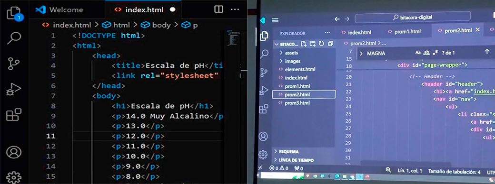

Semana 1
Sesiones 1 & 2
Esta semana fue mi primera clase y tambien nuestra segunda sesión del curso de Laboratorio de Innovación 2, el profesor se presentó y nos contó como seria el desarrollo a lo largo del Promedio 1,
con la creación de esta Bitácora Digital donde contaremos nuestros avances semanalmente, también hicimos una actividad en clase de manera
grupal para conocer un poco del programa.
Semana 2
Sesión 3
Continuamos viendo un poco más acerca del programa y más etiquetas de caracteres y espacio, como listas y atributos, poco a poco vamos conociendo nuevas
formas de darle una mejor vista y dinamismo a nuestra bitácora, ya sea con video, audio y animación.
Semana 3
Sesiones 4 & 5

En estas dos sesiones que llevamos acabo esta semana, el profesor nos mostró sobre los formatos MP4, AVI, que van acompañados de sus respectivos códecs y características,
también vimos sobre las reglas de diseño y configuración en el programa (CSS), las estructuras de una regla, como los atributos, etc.
Mientras iba avanzando la clase el profesor nos explicó como dividiríamos nuestros apartados en nuestra bitácora, como los promedios y las sesiones, a su vez también las redes sociales.
En la siguiente sesión vimos las reglas aplicadas a cajas, como los estilos de bordes y colores que se le pueden dar,
ya para finalizar la clase el profesor nos hizo un ejercicio de recrear una imagen de una escala de PH con lo aprendido en clase.
Semana 4
Sesiones 6 & 7

En esta semana, en la primera clase que nos tocaba con el profesor, le dedicamos el tiempo a realizar correciones y pulir nuestra bitácora en el aula, para poder subir el avance correspondiente al moodle, ya que, en la segunda clase de la semana, el profesor nos indicaría que aprenderíamos a subir nuestra bitácora “a la nube” con JavaScript, para que se puedan visualizar nuestras bitácoras con un link sin la necesidad de adjuntar el comprimido.
De la mano Github subimos nuestra información a la red y con Netify que hace la labor de leer, interpretar y convertirlo finalmente a un sitio web.
Dando como resultado nuestra bitácora en la red.
Semana 5
Sesiones 8 & 9

En esta semana nos adentramos ya más a fondo al arduino, en la primera sesión de la semana, al inicio de clases vimos un poco sobre hosting, dominio,
uso de páginas web como a tema de repaso para empezar con arduino, donde el profesor nos explicó sobre los principales componentes, los tipos de arduino,
también sobre las diferencias de la robótica y electrónica, donde entramos a fondo a las unidades fundamentales eléctricas, de la mano del profesor hicimos
ejercicios para entender mejor arduino junto con la Ley de Ohm. Continuando con la segunda sesión hicimos un recuento para recordar lo que hicimos la anterior
clase y seguir reforzando lo aprendido dando paso a el tema de los circuitos en serie y en paralelo, donde el profesor usó el ejemplo del circuito del agua para
poder entender mejor el tema.